She walks with the grace of the backwaters, her presence echoing the silent strength of the palms. In every fold of her Kasavu Sari lies a story of generations, a heritage woven in gold and off-white.
From the jasmine in her hair to the traditional Jhumkas that dance with her laughter, she is the living canvas of God's Own Country.
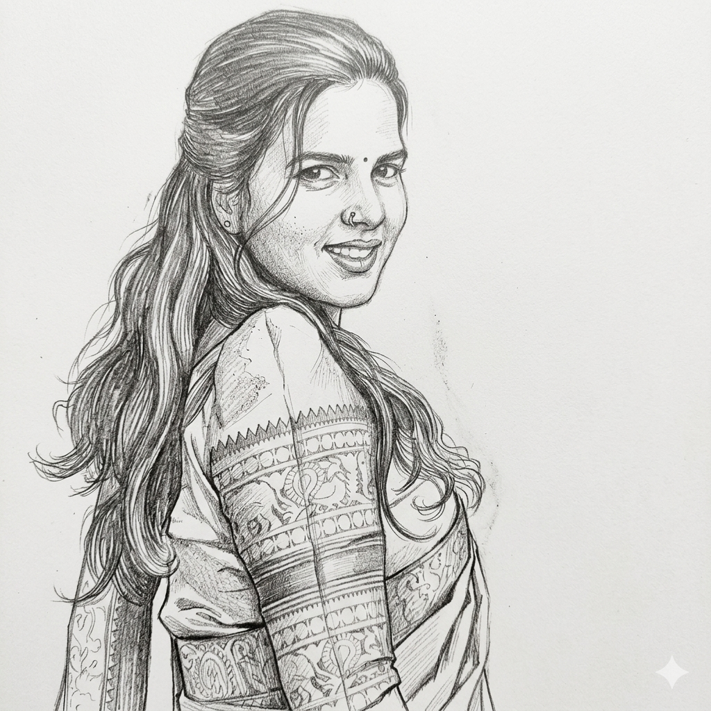
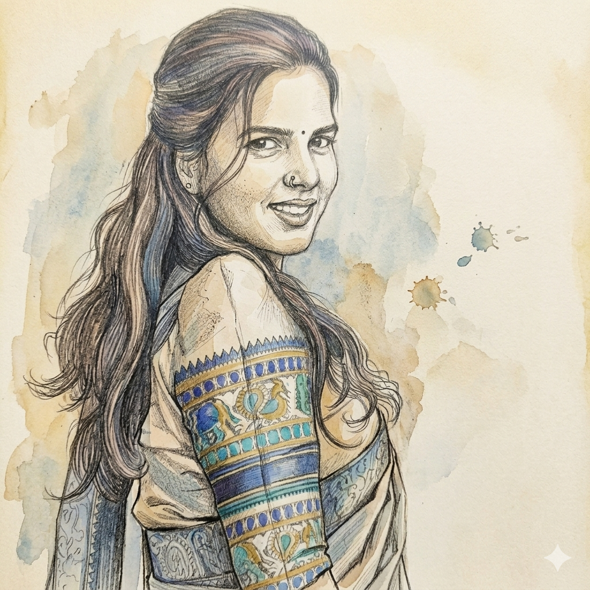
The Artistry of Tradition
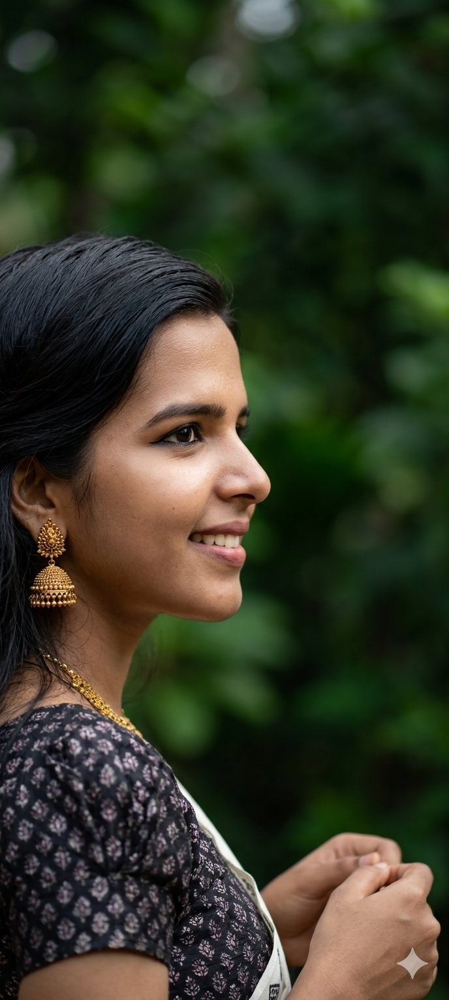
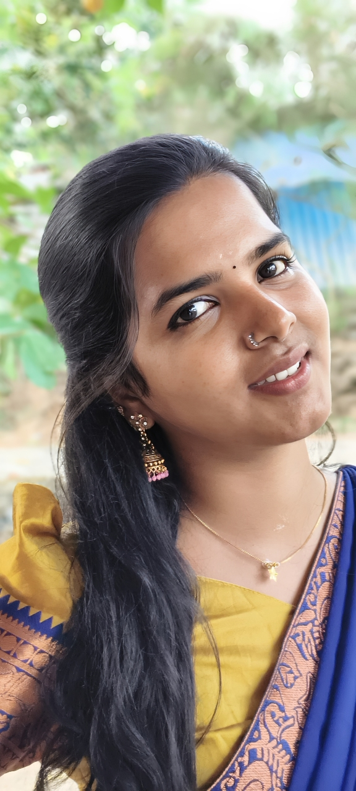
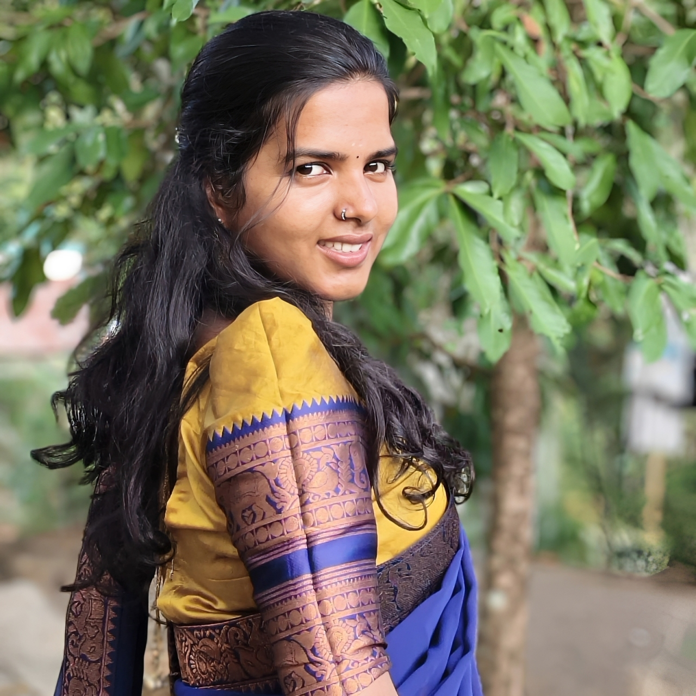
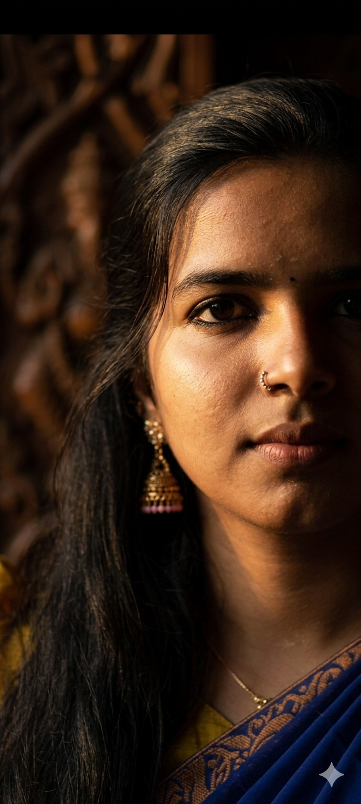
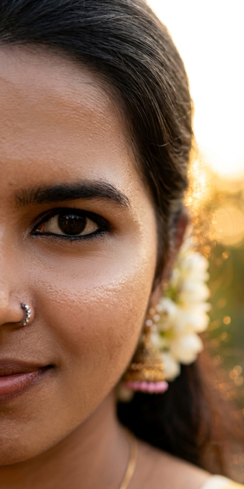
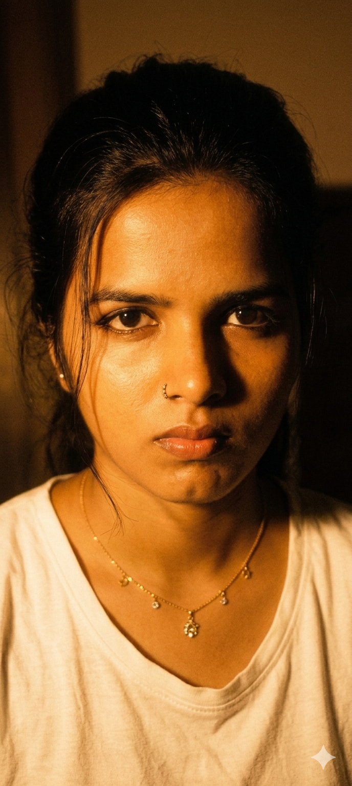
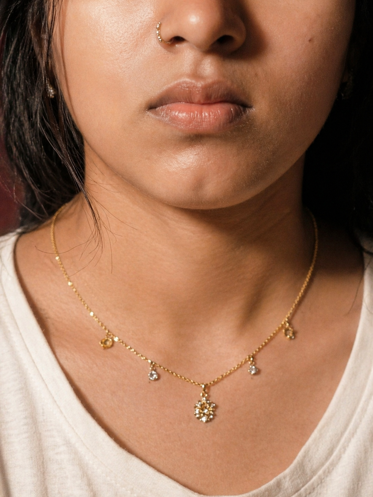
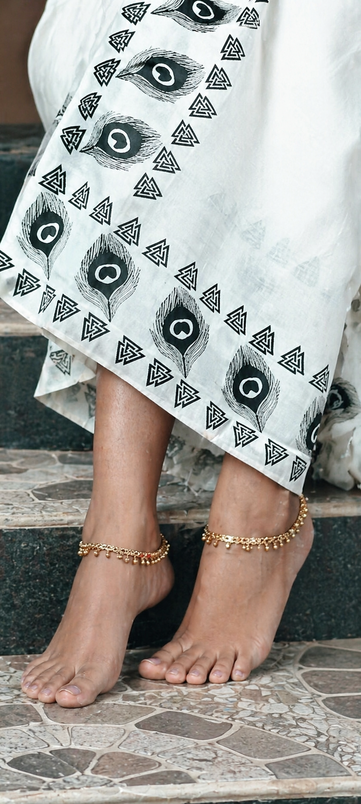
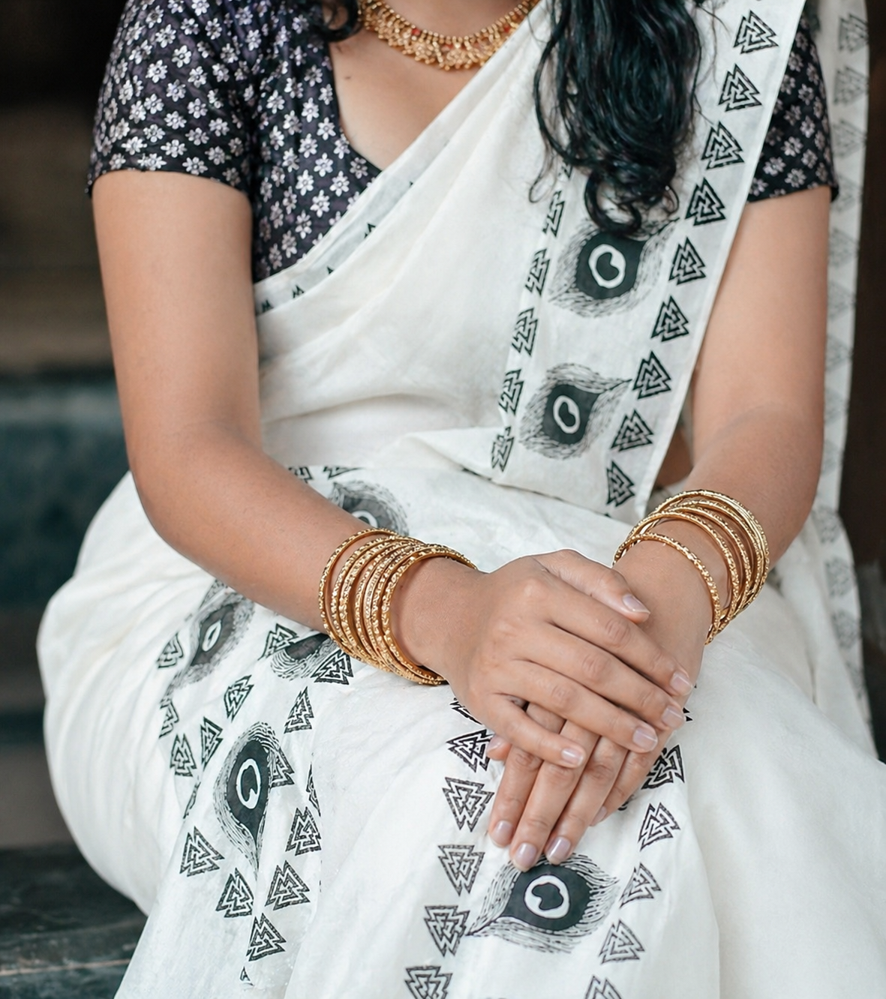